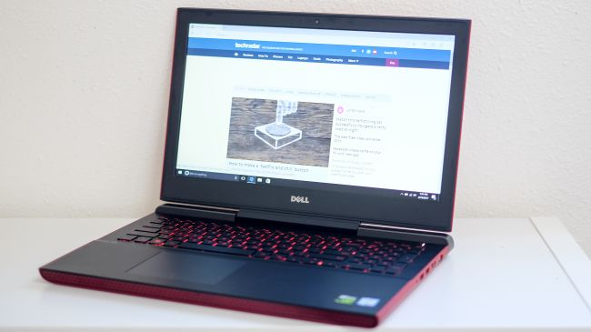

CPU: Intel Core i5 – i7 | Graphics: Nvidia GeForce GTX 1050 – 1050 Ti | RAM: 8GB – 16GB | Screen: 15.6-inch, FHD 1,920 x 1,080 – UHD 3,840 x 2,160 anti-glare LED backlit | Storage: 1TB SSHD 8GB – 1TB HDD
In a world full of overpriced (and overcompensating) gaming laptops, the Dell Inspiron 15 Gaming is a breath of fresh air. An anomaly that ditches the Alienware moniker, Dell has crafted yet a gaming laptop that’s masked as one of its more productivity-centric machines. The discrete graphics options won’t blow you away, but the price certainly will. Plus with a battery life recorded at 7 hours and 38 minutes, it’s unparalleled in that department.

Dell Inspiron 15 Gaming